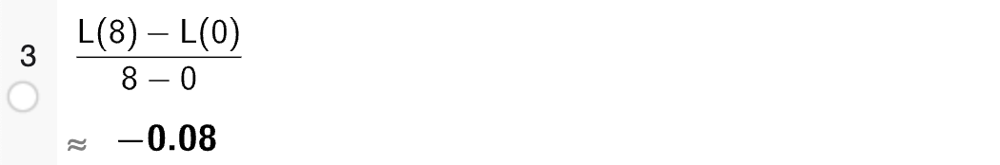
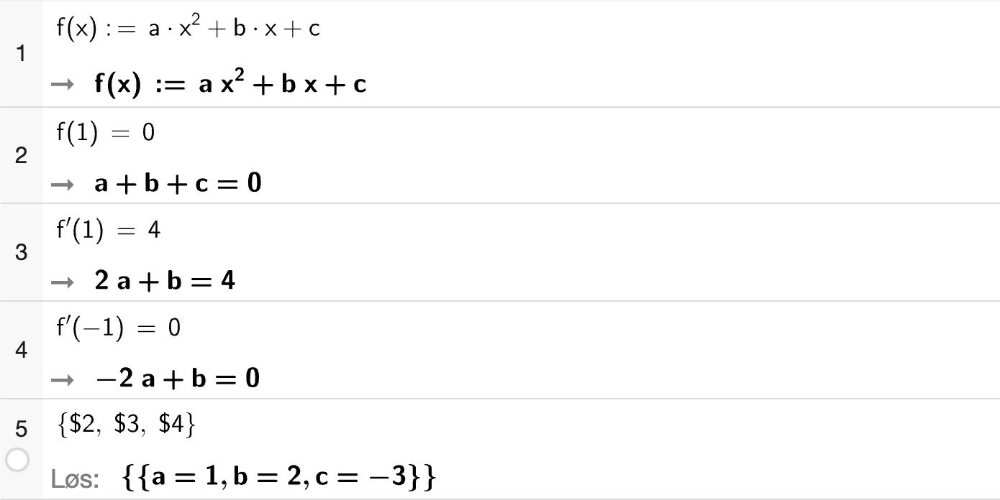
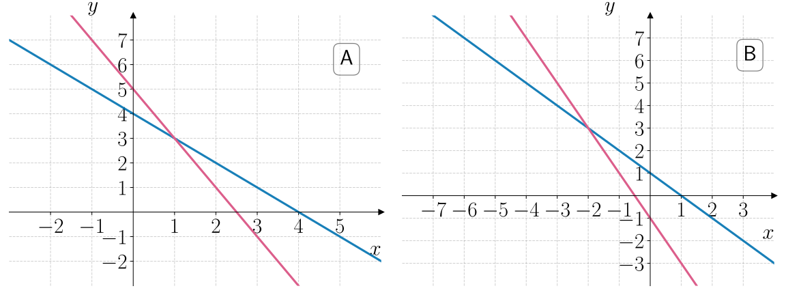
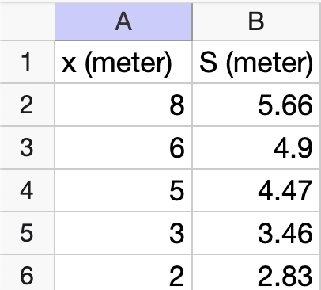
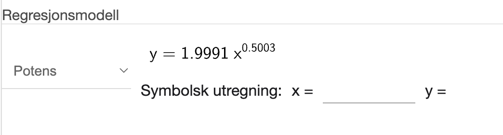
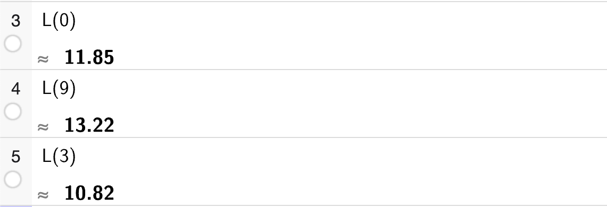
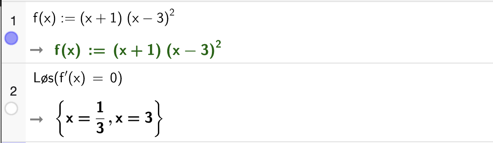

Oppgave 1
På bakkenivå er lufttrykket 1 atm (atmosfærisk trykk). Lufttrykket avtar med \(12 \, \%\) per km i høyden.
Forklar at en modell som passer med beskrivelsen ovenfor er
der \(L(x)\) er det atmosfæriske trykket \(x\) kilometer over bakken.
Retteveiledning
Inntil 1 poeng for å forklare at \(L\) er en eksponentiell modell \(L(x) = a \cdot b^x\).
Inntil 1 poeng for å forklare verdiene \(a\) og \(b\) ut ifra opplysningene i oppgaven.
Løsning
\(L\) vil være en eksponentiell modell siden lufftrykket avtar med en prosentvis endring per km. Derfor er det modell på formen
der \(a\) er startverdien ved \(x = 0\) og \(b\) er vekstfaktoren. Ved \(x = 1\) er \(L(0) = 1\) som betyr at \(a = 1\). Siden lufttrykket avtar med \(12 \, \%\) per km, er vekstfaktoren \(b = 1 - 0.12 = 0.88\). Dermed får vi at
Ved hvilken høyde er lufttrykket halvparten av det på bakkenivå?
Retteveiledning
Inntil 1 poeng for å forklare å velge en gyldig fremgangsmåte.
Inntil 1 poeng for riktig svar.
Fasit
Ca. \(5.42\) km over bakken.
Løsning
For å bestemme hvilken høyde lufttrykket er halvparten av det på bakkenivå, må vi løse likningen
Vi bruker CAS til å løse likningen:

som betyr at lufttrykket er halvparten av det på bakkenivå ved \(x \approx 5.42\) km over bakken.
Bestem stigningstallet til linja som går gjennom \((0, L(0))\) og \((8, L(8))\).
Gi en praktisk tolkning av svaret.
Retteveiledning
1 poeng for å bestemme riktig stigningstall.
1 poeng for riktig praktisk tolkning av svaret.
Løsning
Stigningstallet til linja som går gjennom punktene \((0, L(0))\) og \((8, L(8))\) svarer til den gjennomsnittlige vekstfarten til \(L\) i intervallet \([0, 8]\). Vi regner ut dette med CAS:
{kind=link}

Stigningstallet til linja er altså ca. \(-0.08\) atm/km. Det betyr at lufttrykket i gjennomsnitt blir \(0.08\) atm lavere per km i høyden fra bakkenivå opp til \(8\) km over bakken.
Oppgave 2
En regulær 6-kant er en 6-kant der alle sidene er like lange.
En sirkel med radius \(1\) er innskrevet i en regulær 6-kant. En trekant har et hjørne i sentrum av sirkelen. Se figuren nedenfor.

Bruk trigonometri til å bestemme arealet av 6-kanten.
Retteveiledning
Inntil 1 poeng for å bestemme sidelengdene i trekanten med en gyldig strategi.
Inntil 1 poeng for å bestemme arealet av trekanten.
Inntil 1 poeng for å bestemme arealet av 6-kanten.
Fasit
Arealet av 6-kanten er \(2\sqrt{3}\).
Løsning
6-kanten består av 6 like store trekanter. Vi trenger derfor å bestemme arealet av én slik trekant først. La trekanten som er tegnet inn være \(\triangle ABC\) der \(A\) er hjørnet i sentrum av sirkelen. Vi kan først merke oss at sentralvinkelen \(\angle A = u\) vil være
siden det er \(360\degree\) i en hel sirkel og det er 6 like store toppvinkler i de 6 trekantene vi har plass til med toppunkt i sentrum av sirkelen.
Trekant \(\triangle ABC\) er minimum en likebeint trekant siden \(AB = AC\). Videre er \(\angle A = 60\degree\) som betyr at \(\angle B = \angle C = 60\degree\) og trekanten er derfor også likesidet. Vi kan derfor lage følgende hjelpefigur der vi trekker en midtnormal fra hjørne \(A\) ned på \(BC\) som deler \(\angle A\) nøyaktig i to like store vinkler, og tilsvarende deler \(BC\) i to like lange linjestykker. Siden radien i sirkelen er \(1\), følger det at lengden på midtnormalen er \(1\). Vi lar sidelengdene i trekanten være \(\ell\). Se figuren nedenfor.

I utregningen nedenfor bruker vi at \(\sin 60 \degree = \cos 30 \degree = \dfrac{\sqrt{3}}{2}\).
Fra definisjonen av cosinus, kan vi da skrive
Deretter bruker vi arealsetningen for å bestemme arealet av trekant \(\triangle ABC\):
6-kanten består av 6 slike trekanter, så det samlede arealet blir da
Oppgave 3
Nedenfor vises grafen til en andregradsfunksjon \(f\) og to tangenter som skjærer gjennom nullpunktene til \(f\).
Den ene tangenten har stigningstall \(4\).
Tangentene skjærer hverandre i \((-1, -8)\).
Bestem \(f(x)\) og \(f'(x)\).

Retteveiledning
Inntil 1 poeng for å sette opp et gyldig likningssystem for koeffisientene til \(f(x)\) eller \(f'(x)\).
1 poeng for å bestemme \(f(x)\) med en gyldig fremgangsmåte.
1 poeng for å bestemme \(f'(x)\) med en gyldig fremgangsmåte.
Andre gyldige fremgangsmåter som leder fram til \(f(x)\) og \(f'(x)\) vil også gi full uttelling.
Fasit
Løsning
Vi kan sette opp et likningssystem ut ifra opplysningene i oppgaven. Vi trenger tre likninger der minst én av de ikke er en nullpunktslikning.
Begge tangenter går gjennom punktet \((-1, -8)\). Den ene tangenten har stigningstall \(4\). Fra ettpunktsformelen kan vi dermed skrive ned likningen til denne tangenten som:
Her kan vi konkludere at tangenten skjærer \(x\)-aksen i
Det betyr at vi fra denne tangenten kan sette opp likningene
Den andre tangenten går gjennom det andre nullpunktet til \(f\). På grunn av symmetrien til en andregradsfunksjon, betyr det at \(x\)-koordinaten til skjæringspunktet mellom de to tangentene svarer til symmetrilinja til \(f\). Dermed vil en tangent i punktet ha stigningstall \(0\) slik at den siste likningen vi trenger er
En andregradsfunksjon \(f\) er generelt sett gitt ved
Vi løser likningssystemet med CAS for å bestemme koeffisientene til \(f(x)\):
{kind=link}

som betyr at
Deriverer vi uttrykket, får vi:
Andre likninger vi kunne hentet ut fra opplysningene i oppgaven er:
\(f(-3) = 0\)
\(f'(-3) = -4\)
Oppgave 4
Nedenfor vises en sylinder fylt med vann med et lite hull i bunnen.
{kind=link}

Den horisontale avstanden vannstrålen beveger seg er \(S_i\) meter når vannstanden er \(x_i\) meter over bunnen av sylinderen. I tabellen nedenfor vises et datamateriale for dette.
\(x\) (meter) |
\(8\) |
\(6\) |
\(5\) |
\(3\) |
\(2\) |
|---|---|---|---|---|---|
\(S\) (meter) |
\(5.66\) |
\(4.90\) |
\(4.47\) |
\(3.46\) |
\(2.83\) |
Lag en modell på formen
som viser hvor mange meter \(S(x)\) vannstrålen beveger seg horisontalt når vannstanden er \(x\) meter over bunnen av sylinderen.
Retteveiledning
Inntil 1 poeng for å velge en gyldig fremgangsmåte.
1 poeng for å bestemme en rimelig modell \(S(x)\).
Fasit
Løsning
Vi skriver inn datapunktene i et regneark i Geogebra:
{kind=link}

Deretter gjør vi regresjonsanalyse og velger en potensfunksjon som modell siden dette er modelltypen som er oppgitt som gir:
{kind=link}

som betyr at
er en passende modell for datamaterialet.
Vi definerer \(S(x)\) som dette i resten av oppgaven.
Etter at hullet ble åpnet, varierte høyden til vannstanden med tiden slik at den kan beskrives av en modell på formen
Når hullet i bunnen ble åpnet var vannstanden \(10\) meter over bunnen. Tanken ble halvfull etter \(7\) sekunder.
Bestem \(k\) og \(r\). Gi en praktisk tolkning av konstanten \(r\).
Retteveiledning
Inntil 1 poeng for å bestemme \(k\) og \(r\).
Inntil 1 poeng for å gi en praktisk tolkning av konstanten \(r\).
Fasit
Den praktiske tolkningen av \(r\) er at det tar \(r \approx 23.9\) sekunder før tanken er tom for vann.
Løsning
Modellen \(h\) er en andregradsfunksjon skrevet på ekstremalpunktsform. Fra opplysningene kan vi sette opp et likningssystem:
Vi bestemmer \(k\) og \(r\) ved å løse likningssystemet i CAS:

som gir oss at
Siden \(h(t)\) er skrevet på ekstremalpunktsform med en ekstremalverdi som er \(y_0 = 0\), vil \(t = r\) svare til \(t\)-koordinaten til bunnpunktet og nullpunktet til \(h\). Den praktiske tolkningen er at det tar \(r = 23.9\) sekunder før tanken er tom for vann.
Hvor lang tid tar det før lengden av strålen og høyden på vannstanden er like?
Retteveiledning
Inntil 1 poeng få bestemme ved hvilken høyde strålen og høyden på vannstanden er like.
Inntil 1 poeng for å bestemme hvor lang tid det tar før strålen og høyden på vannstanden er like.
Andre gydlige fremgangsmåter for å bestemme hvor lang tid det tar før strålen og høyden på vannstanden er like vil også gi full uttelling.
Fasit
\(t \approx 9.76\) sekunder
Løsning
Vi har to modeller:
\(S(x)\) som gir oss lengden av strålen for en gitt høyde \(x\) på vannstanden.
\(h(t)\) som gir oss høyden på vannet for en gitt tid \(t\).
For å bestemme hvor lang tid det tar før lengden av strålen og høyden på vannstanden er like, løser vi oppgaven i to steg:
Vi løser \(S(x) = x\) for å avgjøre når strålen og høyden er like.
Vi løser \(h(t) = x\) for løsningen vi fikk i steg 1 for å avgjøre når vi er ved høyden som er lik lengden av strålen.
Vi løser dette med CAS:

Her finner vi fra steg 1 at \(x = 4\) er høyden der lengden av strålen og høyden på vannstanden er like. Så løser vi \(h(t) = 4\) for å avgjøre hvor lang tid det tok før vannstanden hadde denne høyden, som ga oss to løsninger:
Men vi vet allerede at vanntanken er tom etter \(t \approx 23.9\) sekunder, som betyr at vi kan konkludere at høyden til vannstanden og lengden på vannstrålen var like etter \(t \approx 9.76\) sekunder.
Oppgave 5
En båt skal reise fra en øy \(A\) til en øy \(C\).
Båten må innom land på en kystlinje på et punkt \(B\) for å hente ferskvann. Båten skal reise en så kort som mulig avstand for å spare drivstoff.
Kystlinjen er \(9\) km lang. Øy \(A\) ligger \(2\) km fra land og øy \(C\) ligger \(4\) km fra land. Se figuren nedenfor.

En strandkiosk \(S\) er plassert på starten av kystlinja.
Bestem lengden båten må kjøre fra \(A\) til \(C\) dersom den går i land \(2\) km fra strandkiosken.
Retteveiledning
Inntil 1 poeng for å bruke Pytagoras’ setning til å bestemme lengdene \(AB\) og \(BC\).
Inntil 1 poeng for å bestemme den totale lengden på reisen fra \(A\) til \(C\).
Fasit
Ca. \(10.89\) km
Løsning
Vi bruker Pytagoras’ setning på de to trekantene med \(x = 2\) km som gir at de horisontale katetene er henholdsvis \(2\) km og \((9 - 2)\) km. Vi regner ut summen av lengdene \(AB + BC\) med CAS:

som betyr at båten da kjører ca. \(10.89\) km.
Lag en modell \(L\) som gir lengden \(L(x)\) som båten må kjøre dersom den går i land en avstand \(x\) fra strandkiosken.
Retteveiledning
Inntil 1 poeng for å bruke Pytagoras’ setning til å bestemme lengdene \(AB\) og \(BC\).
Inntil 1 poeng for å sette opp modellen \(L(x)\).
Fasit
Løsning
Lengden \(L(x)\) vil være summen av lengdene \(AB\) og \(BC\) for en bestemt verdi av \(x \in [0, 9]\). Med Pytagoras’ setning følger det at:
Dermed er modellen \(L\) gitt ved
Bestem hvor langt unna strandkiosken båten må gå i land for å få kortest mulig reisevei fra \(A\) til \(C\).
Retteveiledning
Inntil 1 poeng for å velge riktig fremgangsmåte.
Inntil 1 poeng for å bestemme \(x\) slik at reiseveien er kortest mulig. Maksimalt 0,5 poeng hvis det ikke argumentert for at \(x\) gir et bunnpunkt.
Fasit
Løsning
For å bestemme hvor langt unna strandkiosken båten må gå i land for å få kortest mulig reisevei, løser vi likningen \(L'(x) = 0\) for å finne kandidater for bunnpunkter til \(L\). Vi løser likningen med CAS:

som forteller oss at \(x = 3\) er en kandidat for et bunnpunkt. For å være sikre på at dette er et bunnpunkt, holder det å sjekke \(L(x)\) i endepunktene og sammenligne med \(L(3)\):
{kind=link}

Vi ser altså at \(L(3) < L(0)\) og \(L(3) < L(9)\), og dermed er \(x = 3\) et bunnpunkt. Dermed må båten gå i land \(3\) km fra strandkiosken for å få kortest mulig reisevei fra \(A\) til \(C\).
Oppgave 6
Nedenfor vises et kvadrat med sidelengder \(3\).
Kvadratet er fylt med mindre fargelagte kvadrater som blir mindre og mindre.

Lag et program som regner ut summen av arealet til de 100 største fargelagte kvadratene.
Retteveiledning
Inntil 1 poeng for å skrive et program som bruker en løkke som regner ut arealet av \(100\) kvadrater.
Inntil 1 poeng for å bestemme riktig sum av arealene.
Mindre mangler i programmet kan fortsatt gi noe uttelling. Programmet bør være rimelig forklart med kommentarer eller en overordnet forklaring for å gi full uttelling.
Løsning
Først kan vi legge merke til at sidelengdene i det største fargelagte kvadratet er \(3/2\). Deretter halveres sidelengden for hvert mindre fargelagte kvadrat. For å summere arealet til de 100 største fargelagte kvadratene, kan vi derfor bruke en løkke som gjør følgende:
Regner ut arealet \(A\) av kvadratet med sidelengde \(\ell\) ved \(A = \ell^2\).
Legger til arealet til summen \(s \to s + A\).
Halverer sidelengden \(\ell \to \ell / 2\).
Vi gjentar dette 100 ganger.
Programkode:
1s = 0 # sum av arealer
2lengde = 3 / 2 # sidelengder i første kvadrat
3
4# summerer de 100 største fargelagte kvadratene
5for i in range(100):
6 areal = lengde ** 2 # areal av kvadrat
7 s = s + areal # legg til arealet
8
9 lengde = lengde / 2 # halver sidelengden
10
11print(s)
Utskrift:
2.9999999999999996
Arealet til de 100 største fargelagte kvadratene er ca. \(3\).
Oppgave 7
Nedenfor vises noen påstander.
Avgjør om påstandenen er sanne eller usanne.
Husk å forklare hvordan du kommer fram til svarene dine.
- Påstand 1
Hvis \(f\) er en polynomfunksjon og \(f(-1) = f(3)\), så er \(f'(1) = 0\).
- Påstand 2
Hvis \(f(x)\) er et polynom av grad \(5\), så må \(f(x) = 0\) for minst én verdi av \(x\).
- Påstand 3
Funksjonen \(f\) gitt ved
\[ f(x) = \dfrac{(x - 3)^m}{x^2 - 6x + 9} \quad \text{der} \quad m \in \mathbb{N} \]har en vertikal asymptote kun når \(m = 1\).
Retteveiledning
Inntil 1 poeng for hver påstand som er vurdert riktig.
Riktig svar uten argumentasjon gir ingen uttelling.
Løsning
Påstanden er usann. Påstanden er bare sann for andregradsfunksjoner, men generelt så vil det bare finnes et tall \(c \in \langle -1, 3\rangle\) hvor \(f'(c) = 0\), men dette punktet må ikke nødvendigvis være midt i intervallet.
Vi kan vise dette med et moteksempel ved å se på en tredjegradsfunksjon der \(f(-1) = f(3)\). Én slik tredjegradsfunksjon er:
siden her er \(f(-1) = f(3) = 0\). Så kan vi bestemme i hvilke punkter \(x\) vi får \(f'(x) = 0\) og undersøke hvor i intervallet \([-1, 3]\) et av disse punktene ligger.
{kind=link}

Her finner vi at \(x = \dfrac{1}{3}\) er det eneste punktet som ligger i intervallet \(\langle -1, 3 \rangle\). Men dette punktet er ikke \(x = 1\) (midt i intervallet), så vi har motbevist påstanden.
Påstanden er sann fordi alle oddegradspolynomer må minst ha ett nullpunkt fordi et polynom \(f(x)\) alltid kan faktoriseres i et produkt av lineære faktorer og andregradsfaktorer. For at vi skal få en oddetallspotens som høyeste potens må det alltid være minst én lineær faktor \((x - r)\) i \(f(x)\) som sikrer at \(f(x) = 0\) for minst én verdi av \(x = r\).
Påstanden er sann som vi kan se ved å faktorisere nevneren:
Bare når \(m = 1\) vil vi ha færre faktorer av \((x - 3)\) i telleren enn i nevneren som dermed gir en vertikal asymptote i \(x = 3\). For alle andre naturlig tall \(m\) vil vi enten ha like mange faktorer eller flere i telleren som bare gir et bruddpunkt i \(x = 3\).